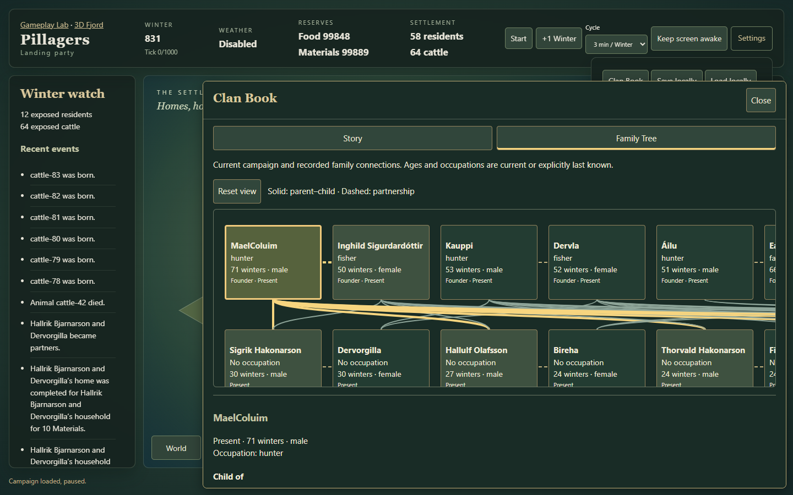
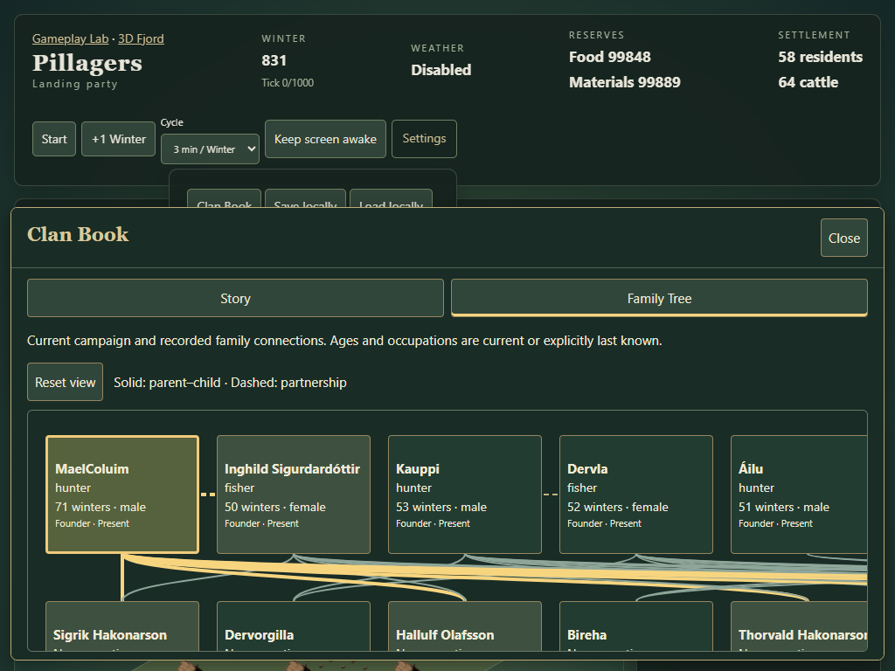
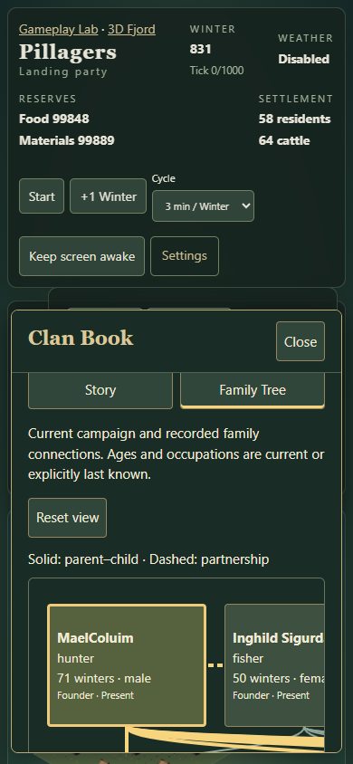
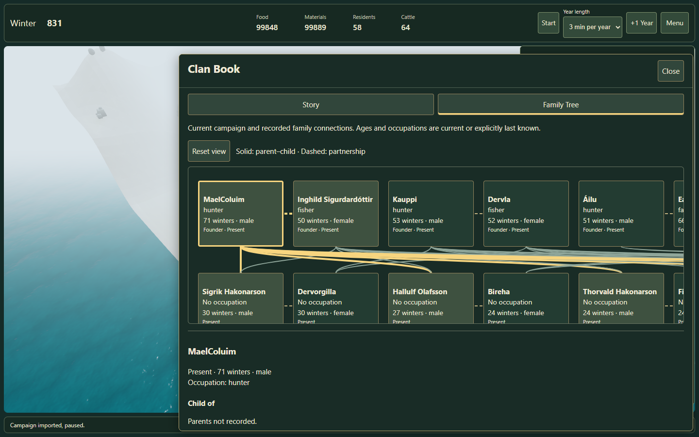
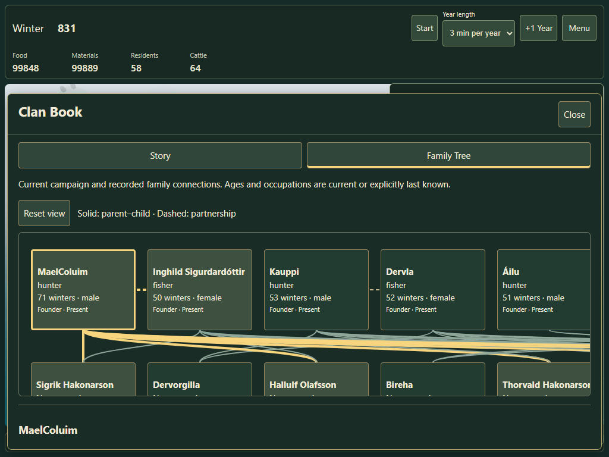
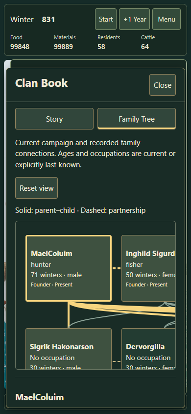

Family Tree
A second tab in the existing Clan Book. Ten founders, their descendants and recorded family relationships.
Try it
Open the campaign Menu, choose Clan Book, then Family Tree. Select a person to read Child of, Father/Mother of, partnerships and Personal history. Scroll inside the diagram to reach the other founders and generations.
For the larger example, import the downloadable review campaign. Import replaces the currently loaded campaign; save your campaign first if you want to return to it.
What changed
The existing story chapter selector and factual overview stay in Story. Family Tree shows the current loaded family history, including babies and historical relatives. A lone unrelated newcomer stays in ordinary resident management. Reading preserves the running or paused clock.
Solid lines mean recorded parent–child links; dashed lines mean partnerships. Select a card to highlight its direct connections, or use the textual relationship links. The first screenshot set shows the founders; the links below each image show the scrolled diagram.


















Evidence and limits
The fixture uses real Core lifecycle commands with labelled test-only rates. First projection: 8.44 ms; cached-query median: 0.93 ms; card update: 1.41 ms. These are local observations, without a performance gate.
Desktop, tablet touch and phone portrait emulation pass on both routes, including internal scrolling, keyboard tabs, chapter queuing and rollback. Physical iPad Safari remains a separate device check.